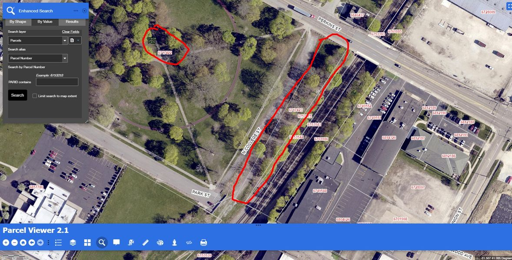

Timeline photos
Please be aware that the land I have circled in red is owned by the City of Akron. CSX doesn't want homeless people on their precious dirt. But the @[139561179458303:274:City of Akron, Ohio - Mayor's Office] owns the land I have circled. So, please feel free to continue camping there.